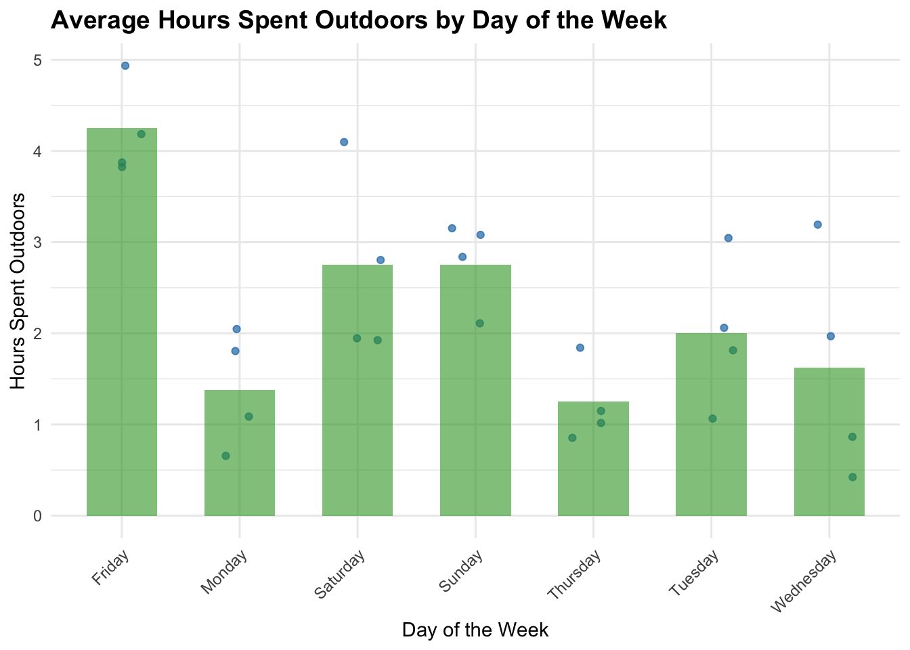
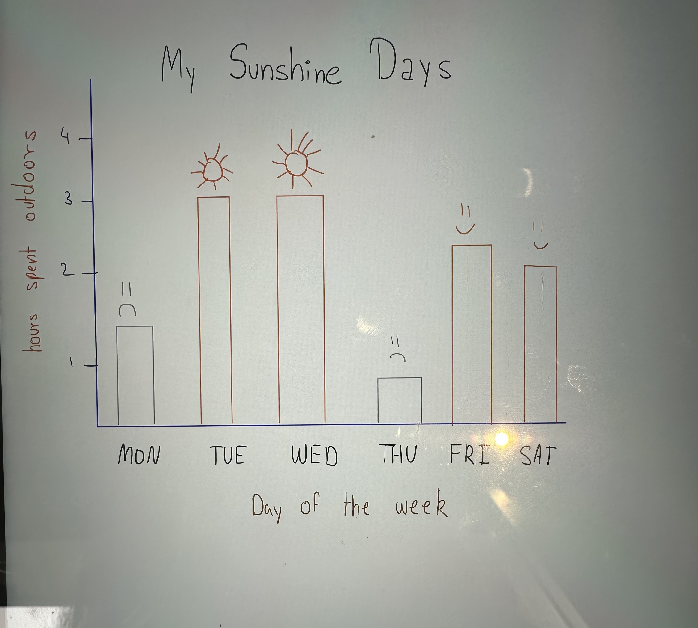
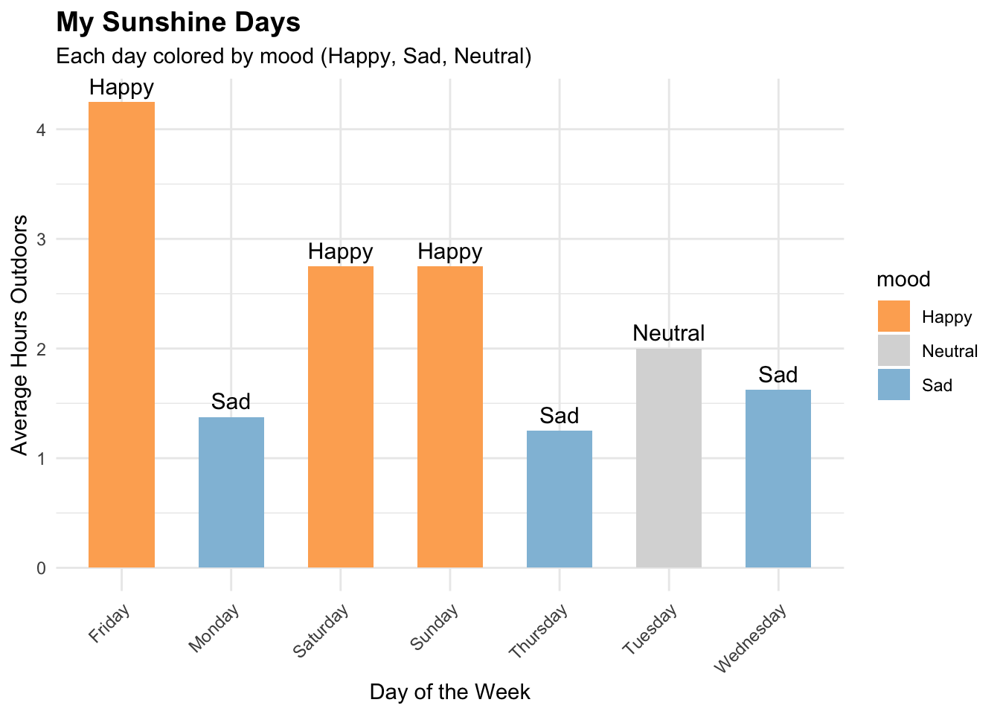

── Attaching core tidyverse packages ──────────────────────── tidyverse 2.0.0 ──
✔ dplyr 1.1.4 ✔ readr 2.1.5
✔ forcats 1.0.0 ✔ stringr 1.5.1
✔ ggplot2 3.5.2 ✔ tibble 3.2.1
✔ lubridate 1.9.4 ✔ tidyr 1.3.1
✔ purrr 1.0.4
── Conflicts ────────────────────────────────────────── tidyverse_conflicts() ──
✖ dplyr::filter() masks stats::filter()
✖ dplyr::lag() masks stats::lag()
ℹ Use the conflicted package (<http://conflicted.r-lib.org/>) to force all conflicts to become errors
library(gt) library(janitor)
Attaching package: 'janitor'
The following objects are masked from 'package:stats':
chisq.test, fisher.test
library(readxl)
library(here)
here() starts at /Users/siaasingh/Desktop/ENVS_193DS/Homework_3/ENVS-193DS_homework-03/code
# Read in the personal datasetpersonal_data <-read_csv(here("..", "data", "ENVSDS_personaldatacsv.csv"))
Rows: 28 Columns: 3
── Column specification ────────────────────────────────────────────────────────
Delimiter: ","
chr (1): Days of the Week
dbl (2): Hours of Homework, Hours spent outdoors
ℹ Use `spec()` to retrieve the full column specification for this data.
ℹ Specify the column types or set `show_col_types = FALSE` to quiet this message.
Problem 1 a. I could calculate the average number of hours I spent outdoors for each day of the week and compare those means. This would help me understand how my time outdoors varies by weekday—perhaps I spend more time outside on weekends because I have fewer classes, or less on weekdays with heavy homework loads like Monday or Wednesday.
b. Visualization
# Clean column names to simplify plottingpersonal_data <- personal_data |> janitor::clean_names()# Summarizing mean outdoor hours by weekdaysummary_data <- personal_data |>group_by(days_of_the_week) |>summarize(avg_outdoors =mean(hours_spent_outdoors))# Plot both individual points + summarized means# Create a plot showing both raw data points and summarized averages:# - geom_jitter() plots each individual observation, #slightly offset to avoid overlap# - geom_col() overlays bars showing the average hours #spent outdoors for each weekdayggplot(personal_data, aes(x = days_of_the_week, y = hours_spent_outdoors)) +geom_jitter(width =0.2, color ="#1f78b4", alpha =0.7) +# raw data points and changing coloursgeom_col(data = summary_data, aes(y = avg_outdoors), fill ="#33a02c", alpha =0.6, width =0.6) +#average (mean) values per weekdaylabs(title ="Average Hours Spent Outdoors by Day of the Week",x ="Day of the Week",y ="Hours Spent Outdoors" ) +theme_minimal() +theme(axis.text.x =element_text(angle =45, hjust =1),plot.title =element_text(face ="bold", size =14) )

c.
This figure shows the average number of hours spent outdoors by day of the week, with
individual data points shown for each entry. The plot highlights that I tend to spend more
time outdoors on weekends like Friday and Saturday, compared to weekdays such as
Monday or Thursday. This may reflect differences in workload and class schedules.
d. Table Presentation
# Load gt packagelibrary(gt)# Round to 1 decimal and format as a labeled tablesummary_data |>mutate(avg_outdoors =round(avg_outdoors, 1)) |>gt() |>cols_label(days_of_the_week ="Day of the Week",avg_outdoors ="Average Hours Spent Outdoors" ) |>tab_header(title ="Average Outdoor Time by Day of the Week" )
Average Outdoor Time by Day of the Week
Day of the Week
Average Hours Spent Outdoors
Friday
4.2
Monday
1.4
Saturday
2.8
Sunday
2.8
Thursday
1.2
Tuesday
2.0
Wednesday
1.6
2a. Since I am not too creative/am bad at drawing, I would want to communicate
more through R. My affective visualization will use bar heights to show time
spent outdoors, but I’ll emphasize emotion through color, annotation, and storytelling.
For instance, sunnier days will use lighter, warmer tones, while more confined days will
be shaded in cooler blues. I might add emoji annotations to show mood or thoughts from
those days (like 🌤). This approach balances structure and feeling —
giving a data-rich but deeply personal window into my week. For example, Tuesday
and Wednesday are marked with sunny icons and warm orange bars, while
Monday and Thursday show short bars with sad faces, using cooler tones.
This combination lets me express both the amount of time outside and
how it felt, adding emotional resonance to the data. Since emojis are not currently
rendering with Rstudio, I had to use descriptive words instead in my example.
2b. Sketch of My Idea

2c. Draft of Visualization
library(ggplot2)library(dplyr)# Create mood-labeled datasummary_data <- summary_data |>mutate(mood =c("Happy", "Sad", "Happy", "Happy", "Sad", "Neutral", "Sad"))# Affective bar plotggplot(summary_data, aes(x = days_of_the_week, y = avg_outdoors, fill = mood)) +geom_col(width =0.6) +geom_text(aes(label = mood), vjust =-0.5, size =4) +scale_fill_manual(values =c("Happy"="#FDAE61", # warm orange"Sad"="#91BFDB", # cool blue"Neutral"="#D9D9D9"# neutral gray )) +labs(title ="My Sunshine Days",subtitle ="Each day colored by mood (Happy, Sad, Neutral)",x ="Day of the Week",y ="Average Hours Outdoors" ) +theme_minimal() +theme(plot.title =element_text(size =14, face ="bold"),axis.text.x =element_text(angle =45, hjust =1) )

2d. Artist Statement
My piece, My Sunshine Days, visualizes the emotional rhythm of my week by
translating hours spent outdoors into colored bars. Each hue evokes a mood
—warm oranges for joyful, sunny days, cool blues for quieter, more reflective
moments, and soft greys for those in-between states.I was inspired by affective
visualizations like Stefanie Posavec and Giorgia Lupi’s Dear Data, where data
becomes a deeply personal narrative. I aimed to infuse emotional storytelling into
my chart—beyond just numbers.The medium is a ggplot bar chart rendered in R, with
moods represented through intentional color palettes. I initially hoped to enhance
this affective layer using emojis, but due to rendering limitations in R’s
geom_text() and even some font display issues in the browser,
the emojis appeared as “tofu boxes.” This limitation nudged me to instead lean
into visual color symbolism as my emotional language. The process involved
coding in R with dplyr and ggplot2, structuring the data with mood labels,
then carefully assigning each tone to a color that would evoke the emotion I felt on that day
as I relate being outside with being happy.
3a. The authors use a combination of statistical techniques to examine
how environmental engagement relates to prosocial behavior.
Specifically, they apply one-way ANOVA to test differences in resource allocation
between groups, chi-squared tests to assess categorical variable associations,
and t-tests for comparing mean scores between high and low environmental
engagement conditions. Additionally, they use Rasch modeling to evaluate the
internal consistency and unidimensionality of their behavioral measures. The figure
below illustrates how participants with varying levels of environmental engagement
allocated resources (in points or kW) depending on whether the task was
environmentally relevant, with 95% confidence intervals shown for each condition.
knitr::include_graphics("FigureHW2.png") #code to insert image in the document
Figure 1: Figure from Homework 2: Resource allocation by environmental engagement and relevance.
3b. The authors clearly represent their statistics in the figure by using bar graphs
with means and 95% confidence intervals, which effectively show the central
tendency and variability. The x- and y-axes are labeled logically, and
categories are clearly differentiated by both environmental relevance and level
of engagement. However, the visualization does not display individual data points,
which limits the reader’s ability to assess the distribution or variability within each group.
3c. Aesthetic Clarity - The authors handle visual clarity well by
minimizing clutter and using a clean bar plot with clearly labeled axes and
confidence intervals. The data:ink ratio is effective—most of the visual
elements communicate essential information without unnecessary decoration.
While the grayscale color scheme reduces visual noise, it might limit accessibility for readers with contrast sensitivity.
3d. Recommendations
To enhance the interpretability of the figure, I recommend overlaying
individual data points using jittered dot plots to show the distribution and
spread within each condition—this would reveal heterogeneity that summary
statistics like means and 95% confidence intervals alone may obscure.
Additionally, incorporating exact sample sizes directly beneath each bar would
contextualize the standard errors and allow for better judgment.
The figure could also benefit from improved differentiation between groups (
e.g., through patterned bar fills or higher-contrast color palettes), which
would increase perceptual clarity, especially in grayscale or for color vision deficiencies.
Finally, annotating statistically significant differences (e.g., with asterisks or p-values)
could help convey results more directly without requiring reference to the main text.